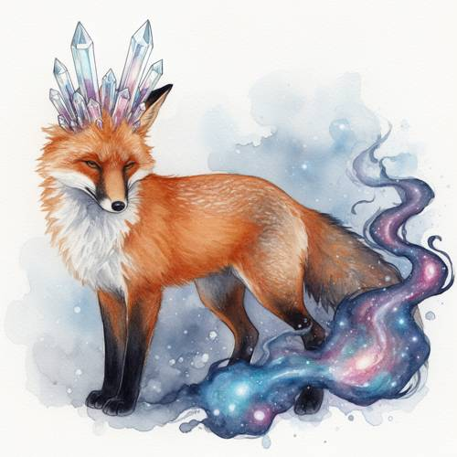
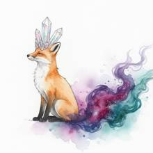
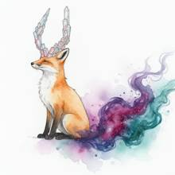

Grammar — In the watercolor style, a fox has crystal-like horns and its tail is
In the watercolor style, a fox has crystal-like horns and its tail is not fluffy, but consists of flowing nebulae.

Direct — one call, no iterationContinuum — Qwen3.8-27B + FLUX.2-dev
Judge — Direct
FAILGrammar - Negation — The prompt specifies that the fox's tail is 'not fluffy'. However, the image depicts a fox where the base of its tail, connecting to its body, is clearly covered in typical orange and grey fur, giving it a fluffy appearance. Only the end of the tail transforms into the nebula, so the negative constraint is not fully met.
PASSCompound - Imagination — The image shows a fox with a cluster of translucent, pointed, and faceted crystals growing from its head, which aligns with 'crystal-like horns'. The end portion of the fox's tail is depicted as a swirling cloud of blue, purple, and pink gas dotted with white specks, matching the description of 'flowing nebulae'.
PASSStyle — The image is presented in a watercolor style, evident from the soft color blending, bleeding edges of the paint (especially in the blue background wash), and the visible texture that suggests paint on paper.
Judge — Continuum
PASSGrammar - Negation — The fox's tail is not depicted with a fluffy, fur-like texture. Instead, it is shown as a flowing, ethereal substance, which adheres to the negative constraint in the prompt.
PASSCompound - Imagination — The image displays a fox with two prominent horns growing from its head, composed of translucent, faceted crystals in shades of pink and light blue. The fox's tail is not made of fur but is a swirling mass of purple, magenta, and teal colors, filled with white specks resembling stars, consistent with the description of 'flowing nebulae'.
PASSStyle — The artwork is rendered in a distinct watercolor style, evident from the soft blending of colors, the texture of the paper visible through the paint, the characteristic water blooms and splatters, and the transparent quality of the pigments, especially in the nebula tail and the background washes.
What the agent did
Thinking
The user is asking for a watercolor-style image of a fox with crystal-like horns, and whose tail is not fluffy but is composed of flowing nebulae (starry clouds). Let me generate the first version. I'll write a detailed visual prompt that fills in the implied visual details: - Watercolor style, soft washes, bleeding pigments, textured paper - A fox with crystal horns (translucent, gem-like, glowing) - Tail made of flowing nebulae (cosmic cloud-like, purple/blue/teal, starry dust, flowing) - Composition: the fox sitting, or a full-body fox portrait Let me generate using flux2-dev, default 1024x1024 (size is controlled by the harness; the default is 1024). I'll use the default dimensions. Prompt: "Watercolor painting of a small fox with translucent crystal-like horns on its head, its long tail dissolving into flowing cosmic nebulae — swirling clouds of purple, teal and magenta with fine stardust, wispy smoke-like tendrils, the fluffy fur of the fox's body rendered in soft ochre and orange watercolor washes on textured paper, delicate ink linework, dreamy ethereal atmosphere, white paper background with soft pigment blooms" Let me generate this.
Step 1 — `generate_image`
{
"model": "flux2-dev",
"prompt": "Watercolor painting of a fox with translucent crystal-like horns growing from its forehead, the horns faceted like gemstones catching light. The fox's body is rendered in soft ochre and warm orange watercolor washes with delicate ink linework, sitting gracefully in profile. Its long tail is not fluffy fur but dissolves into flowing cosmic nebulae: swirling gaseous clouds of violet, magenta, teal and blue with fine stardust and wispy smoke-like tendrils trailing behind. Textured cold-press paper background with soft pigment blooms and gentle wash bleeds, ethereal dreamlike atmosphere, minimalist composition, lots of white paper space."
}
Result img_0

Thinking
The result is really good. Let me verify: 1. Watercolor style ✓ — yes, soft washes, texture, ink outlines 2. Fox ✓ — sitting fox, orange/white 3. Crystal-like horns ✓ — there are crystal structures on the head. However, these look more like a crown of crystals/rocks (multiple quartz crystals) than "horns." The prompt said "crystal-like horns" — a cluster of crystals could arguably be called crystal horns, but it looks more like a crystal crown/cap. The crystals are on top of the head rather than on the sides of the forehead. As "crystal-like horns" it's within acceptable range, but horns are usually more curved/horn-like. Hmm. The crystals look like a quartz crown. You could say it works as "crystal-like horns" in a stylized form, but it could be better — horns should extend from the forehead like antlers/horns. 4. Tail made of flowing nebula ✓ — yes, a beautiful flowing nebula tail. Let me zoom in and inspect the horn region to decide.
Model
The first result is very good — the watercolor texture is soft, and the nebula tail reads as clearly flowing rather than fluffy. Let me zoom in on the head to check the "crystal horn" portion.
The crystals look more like a quartz crown/cap sitting on top of the head rather than horns growing from the forehead. The prompt asks for "crystal-like horns." A crown of crystals is a reasonable interpretation, but "horns" implies structures that extend from the head like a deer's antlers or a goat's horns — typically two, curving backward from the forehead. Current state: a cluster of crystals rising from the top of the head, looking like a tiara/crown. This is a stylistic choice that could pass as "crystal-like horns" in a stylized form, but it leans heavily toward "crown." To be more faithful to "crystal-like horns," I could edit to make the crystals into two more distinct horn-like structures curving back from the forehead. I think a targeted edit is worthwhile: "reshape the cluster of crystals into two crystal horns curving backward from the forehead, like translucent gemstone antlers." Let me try an edit_image with a targeted instruction. Let's try editing: "reshape the crown of crystals into two crystal horns curving backward from the forehead, like translucent faceted gemstone antlers, keeping the same watercolor style" Risk: the edit could destroy the good part. The rest of the image is excellent. I'll try the edit, and if it gets worse, I'll mark_best the original image. Actually, let me think about whether it's even necessary in the first place. The prompt: "a fox with crystal-like horns." The current image shows crystals on the head — many people would describe that as crystal horns, but in reality it's clearly a "crystal crown," and the crystals sit on top of the head rather than emerging as horns. A two-horned shape would be more accurate. Let me try one edit.
Model
The crystal looks more like a crown perched on top of the head rather than a horn growing out of the head. Let's shape it into a proper crystal horn.
Step 3 — `edit_image`
{
"image": "img_0",
"model": "flux2-dev",
"prompt": "Reshape the cluster of crystals on the fox's head into two translucent crystal horns that grow from the forehead and curve backward, like faceted gemstone antlers, one on each side. Keep the same soft watercolor style, same crystal colors and paper look, keep everything else exactly the same."
}
Result img_2

Thinking
Now the crystals are clearly shaped like two antler/horn-like crystal structures curving upward from the head — it reads far better as "crystal-like horns." Everything else is preserved: the watercolor fox, the flowing nebula tail. Let me zoom in on the head again and check the quality of the edit.
Model
The crystals now read as two horn/antler-like structures. Let me verify the detail up close.
The crystal horns now read very well — two branching crystal antlers/horns rising from the head, with a faceted gemstone-like appearance, rendered in the same watercolor ink style. The integration looks clean. Now, let me evaluate the whole image against the prompt: 1. Watercolor style ✓ 2. Fox ✓ 3. Crystal-like horns ✓ (two crystal antler-horns) 4. The tail isn't fluffy, it's a flowing nebula ✓ The image is in good shape. Let me mark this as the best and finish. img_2 is the best result.
Step 5 — `mark_best`
{
"image": "img_2",
"reason": "Watercolor fox with two crystal antler-horns growing from the head and a tail of flowing nebulae (violet, magenta, teal gas clouds with stardust), not fluffy fur. All prompt elements present and well rendered."
}
Thinking
Done. The image meets all the requirements: - Watercolor style ✓ - Fox ✓ - Crystal-like horns ✓ - Tail made of a flowing nebula, not fluffy ✓ I'll tell the user what was done.
Model
Done! The final watercolor painting features: - **The fox** — a graceful sitting fox in soft ochre and orange watercolor washes with delicate ink linework, on textured paper with gentle pigment blooms. - **Crystal horns** — two branching, faceted crystal antlers growing from the forehead and curving upward, like translucent gemstones with pale blue and pink facets (initially they read as a crystal crown, so I reshaped them into true horn/antler forms). - **Nebula tail** — instead of fluffy fur, the tail dissolves into flowing cosmic gas: swirling clouds of violet, magenta, and teal with stardust and wispy tendrils trailing behind. The result is marked as your best, and I consider it a faithful match to the prompt.